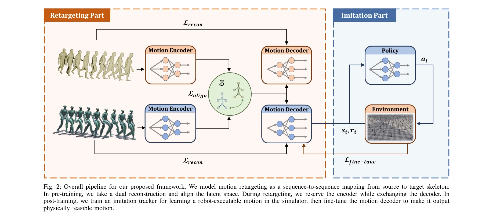

저자: Xingyu Chen, Hanyu Wu, Sikai Wu, Mingliang Zhou, Diyun Xiang, Haodong Zhang | 날짜: 2025-09-18 | DOI: 10.48550/arXiv.2509.15443

Fig. 2: Overall pipeline for our proposed framework. We model motion retargeting as a sequence-to-sequence mapping from
본 논문은 인간의 모션을 휴머노이드 로봇이 실행 가능한 모션으로 변환하는 Implicit Kinodynamic Motion Retargeting (IKMR) 프레임워크를 제안하며, 기존 frame-by-frame 방식의 비효율성을 극복하고 대규모 모션을 실시간으로 처리한다.
Fig. 2: Overall pipeline for our proposed framework. We model motion retargeting as a sequence-to-sequence mapping from
Fig. 2: Overall pipeline for our proposed framework. We model motion retargeting as a sequence-to-sequence mapping from
총평: 본 논문은 motion retargeting에 implicit neural network을 처음 도입하여 scalability 문제를 혁신적으로 해결하고, kinematics과 dynamics를 체계적으로 통합함으로써 physically feasible한 대규모 모션 자동 변환을 실현한 의미 있는 기여이며, 실제 휴머노이드 로봇 배포 검증으로 실용성을 입증했다.